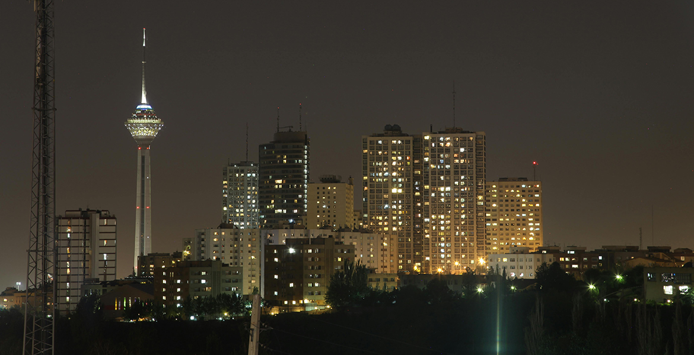
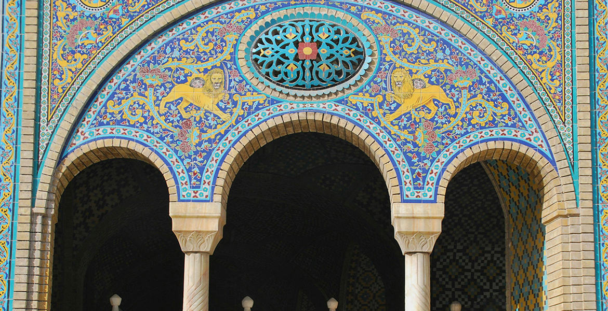
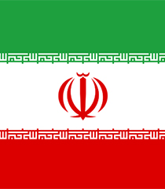
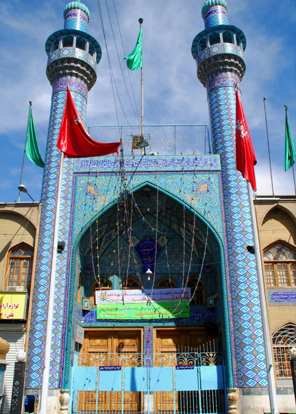

Tehran
8.700.000 Resident
Iran
41’35° LU 26’51° BT



Get More Information

Tehran
View all citiesIran, officially the Islamic Republic of Iran, also known as Persia, is a country located in Western Asia. Although the country has been known locally as "Iran" since ancient times, until 1935, Iran was still referred to as "Persia" in the West.
Images Credit
Bandung
Asia Africa
City Network
Quick Link
Get in touch
Need Information?
+62 81318667479
bapperida@bandung.go.id
© BAACN - All rights reserved